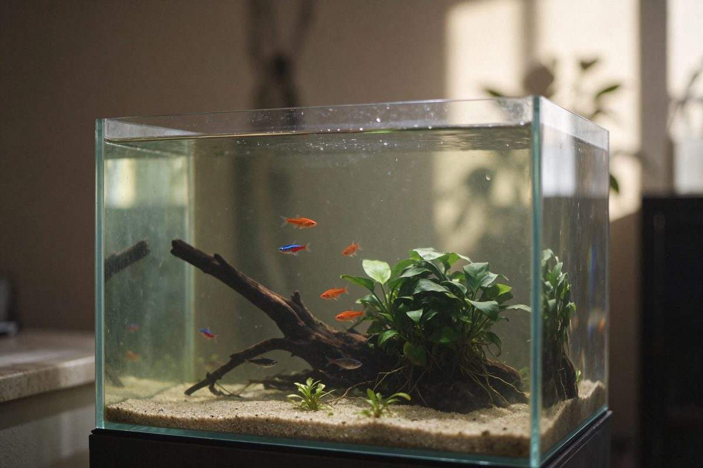

新缸是十月中旬摆上的。60×35×35，超白玻璃，底下铺了薄薄一层河砂， 左边一块沉木，右边一丛小水榕。装好水那天，缸里清得能看见每一颗砂粒， 我坐在前面看了很久，觉得养鱼大概就是这样——一缸清水，几条小鱼。
第二天水就雾了。乳白色，像有人往里倒了一勺牛奶。我知道这是细菌在繁殖， 但知道和接受是两件事。

一、所谓“养水”，养的是什么
刚接的自来水里几乎没有硝化细菌。鱼一进缸就开始排泄，排泄物分解成氨， 氨是有毒的；好在有一类细菌会把氨转成亚硝酸盐，另一类再把亚硝酸盐转成硝酸盐， 毒性一路降下去，最后靠换水带走。这两步细菌长起来大约要三到四周， 这就是开缸期最难受的原因——不是水脏，是还没有人替你处理脏东西。
所以我做的其实只有三件事：给细菌一个住处（滤材）、给它们食物（少量鱼食或氨源）、 然后耐心等。这期间不放进鱼，或者只放一两条最皮实的闯缸鱼。
二、21 天里的三个节点
第 5 天：氨氮最高
试纸上的氨氮读数最深，水也最浑。这时候最容易做错的事是拼命换水、彻底洗滤材， 等于把刚长出来的菌膜冲掉了。我只换了 20% 的水，滤材一律不碰。
第 12 天：亚硝酸盐峰值
氨降下来了，亚硝酸盐却冲到了最高。鱼如果这时在缸里，会明显浮头、趴缸。 我又等了五天，什么都不动。
第 21 天：两个读数同时归零
氨氮 0，亚硝酸盐 0，硝酸盐开始缓慢上升——说明循环走通了， 最后一步有了产物。那天我把试纸放在灯下看了两遍，才相信是真的。
判断“养好了”的标准不是水清，而是：氨氮和亚硝酸盐连续几天都是 0， 并且开始出现硝酸盐。水清只能说明悬浮物沉了，和菌群没关系。
三、接下来要守的规矩
水质稳住不等于一劳永逸，它只是进入了平衡。往后我给自己定了三条：
- 每周换水 25%，固定在同一天，用晾过一天的水，温差不超过 1℃。
- 滤材只在水流明显变小时才洗，而且只用缸里的水轻轻涮，绝不搓。
- 每次只加一条鱼，加完观察一周，再考虑下一条。
现在缸里有六条小宝莲灯，一群黑壳虾，和一块长了些绿斑的沉木。 晚上关掉大灯只留一盏小夜灯，水在动，鱼在动，房间里安静得能听见过滤器。 这大概就是我想养的那一缸水。